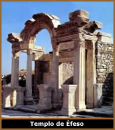
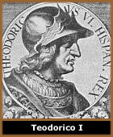
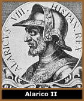

Originários das regiões
meridionais da Escandinávia, os Godos eram um povo germânico
que se distinguia pela fidelidade ao seu rei e comandantes, também
por usar espadas pequenas e escudos redondos.
Desta forma, deixaram a região do rio Vístula (atual
Polônia) em meados do século II, e alcançaram
o Mar Negro.
Com a presença goda, os outros povos germânicos
passaram a pressionar o Império Romano de Marco Aurélio
através do rio Danúbio. No século seguinte,
foram várias as incursões, ataques e saques as províncias
de Anatólia e toda a península balcânica.
A Costa Asiática e o Templo de Éfeso foram vítimas
da fúria dos Godos. Já sob o reinado de Aureliano
(270 - 275), Atenas foi invadida e seguiram-se a tomada de Rodes
e Creta. Os romanos foram expulsos de Dácia, e os Godos
se instalaram definitivamente na região do Danúbio.
Assim de acordo com a região ocupada, os Godos foram denominados
também de Ostrogodos e Visigodos. A partir deste momento,
a cultura e política do Godos passaram a influenciar gradativamente
à Europa através do Império Romano.
Ostrogodos
O reino ostrogodo, que se estendia do mar Negro
até o Báltico, alcançou o apogeu com Ermanarico.
Porém, por volta do ano 370 foram dominados pelos Hunos.
Em 455, o império huno entrou em colapso com a morte do
líder Átila. Os ostrogodos invadiram o Danúbio
central e seguiram para a Itália, onde o imperador Rômulo
Augústulo havia sido derrotado (476) por Odoacro, chefe
dos Hérulos. O rei ostrogodo Teodorico I - o Grande, derrotou
Odoacro (493) e governou a Itália até a sua morte
em 526.
Teodorico foi um governante hábil, homem
culto, educado na corte de Constantinopla, que soube conservar
o equilíbrio entre as instituições imperiais
e as tradições bárbaras. Conseguiu a simpatia
da aristocracia romana e do povo, que assistia satisfeito à
realização de obras públicas para a reconstrução
e modernização de Roma. Ao que parece, Teodorico
alimentava o projeto de fundar um império godo que impusesse
seu domínio sobre o resto do mundo bárbaro. Para
isso, manteve contato com outras tribos godas e estabeleceu vínculos
familiares com os francos, os vândalos e os burgúndios.
Sua morte criou um intrincado problema de sucessão, fato
de que se valeu o imperador bizantino Justiniano para intervir
na Itália. O exército romano oriental, sob o comando
de Belisário, derrotou completamente os ostrogodos, dirigidos
por seu novo rei Totila, cujo nome original era Baduila. Os sobreviventes
se dispersaram ou foram reduzidos à escravidão.
Visigodos
O povo valente, possível significado
do nome visigodos, conquistou no século III a Dácia,
província romana situada na Europa centro-oriental. No
século IV, ante a ameaça dos hunos, o imperador
Valente concedeu refúgio aos visigodos ao sul do Danúbio,
mas a arbitrariedade dos funcionários romanos os levou
à revolta. Penetraram nos Balcãs e, em 378, esmagaram
o exército do imperador Valente nas proximidades da cidade
de Adrianópolis. Quatro anos depois, o imperador Teodósio
I o Grande conseguiu estabelecê-los nos confins da Mésia,
província situada ao norte da península balcânica.
Tornou-os federados do império e deu-lhes posição
proeminente na defesa. Os visigodos prestaram uma ajuda eficaz
a Roma até 395, quando começaram a mudar-se para
oeste. Em 401, chefiados por Alarico I, que rompera com os romanos,
entraram na Itália e invadiram a planície do Pó,
mas foram repelidos. Em 408 atacaram pela segunda vez e chegaram
às portas de Roma, que foi tomada e saqueada em 410.
Nos
anos seguintes, o rei Ataulfo estabeleceu-se com seu povo no sul
da Gália e na Hispânia e, em 418, firmou com o imperador
Constâncio um tratado pelo qual os visigodos se fixavam
como federados na província de Aquitania Secunda, na Gália.
A monarquia visigoda consolidou-se com Teodorico I, que enfrentou
os hunos de Átila na batalha dos Campos Catalâunicos.
Em 475, Eurico declarou-se monarca independente do reino visigodo
de Tolosa (Toulouse), que incluía a maior parte das Gálias
e a Espanha. Seu reinado foi extremamente benéfico para
o povo visigodo: além da obra política e militar,
Eurico cumpriu uma monumental tarefa legislativa ao reunir as
leis dos visigodos, pela primeira vez, no Código de Eurico,
conservado num palimpsesto em Paris. Seu filho Alarico II codificou,
em 506, o direito de seus súditos romanos, na Lex Romana
Visigothorum, mas carecia dos dotes políticos do pai e
perdeu quase todos os domínios da Gália em 507,
quando foi derrotado e morto pelos francos de Clóvis, na
batalha de Vouillé, perto de Poitiers. Desmoronou então
o reino de Tolosa e os visigodos foram obrigados a transferir-se
para Espanha.
O reino visigodo na Espanha esteve inicialmente
sob o domínio dos ostrogodos da Itália, mas logo
tornou-se independente. Para conquistar o domínio da península
ibérica, os visigodos enfrentaram suevos, alanos e vândalos,
povos bárbaros que haviam ocupado o país antes de
sua chegada. A unificação quase se concretizou durante
o reinado de Leovigildo, mas ficou comprometida pelo problema
religioso: os visigodos professavam o arianismo e os hispano-romanos
eram católicos. O próprio filho de Leovigildo, Hermenegildo,
chegou a sublevar-se contra o pai depois de converter-se à
religião católica. Mas esse obstáculo para
a fusão com os hispano-romanos se resolveu em 589, ano
em que o rei Recaredo proclamou o catolicismo, religião
oficial da Espanha visigótica. A monarquia visigoda foi
destruída em 711 pela invasão muçulmana procedente
do norte da África.
Os visigodos, mais civilizados que outras tribos
germânicas em virtude de seu longo contato com Roma, adotaram
a arte do povo bizantino como o arco de ferradura e a planta cruciforme
das igrejas, e realizaram um importante trabalho de compilação
cultural e jurídica. Figuras como santo Isidoro de Sevilha,
ou obras jurídicas como o Código de Eurico, a Lex
Romana Visigothorum e o Liber Judiciorum, código visigótico
que forneceu as bases da estrutura jurídica medieval na
Espanha, expressam o grau de desenvolvimento cultural que o reino
visigodo alcançou.
Do "Gótico"
dos godos ao adjetivo "Gótico"
Apesar dos godos terem sido extintos no começo
do século VIII, seus feitos e conquistas deixaram marcas
permanentes nos povos italianos. Principalmente a Queda do Império,
com tantas construções greco-romanas destruídas,
trouxe um trauma que foi passado de geração em geração.
Desse modo, na época do Renascimento, no
século XVI, o termo godo era sinônimo de
"inculto destruidor da arte clássica". E esse
conceito pejorativo, passa a ser usado para classificar a arte
cristã produzida entre o século XII e XVI, período
em que a Igreja absorvia a estética pré-cristã
da região onde se instalava, chegando até mesmo
a absorver certas características pagãs.
Assim, analogicamente, esse estilo arquitetônico
predominante nesses séculos, cheio de ogivas, vitrais e
gárgulas, passou a ser considerado pelos italianos, o "povo
bárbaro" que "invade" o "povo clássico-cristão",
tornando impura a arquitetura cristã da época.
A grande intenção era vulgarizar
todo o estilo, mas pelo que foi visto nos séculos posteriores,
o termo "gótico" acabou formando uma coesão
do obscurantismo medieval, fincando deste modo, raízes
permanentes na Europa.
Por Spectrum